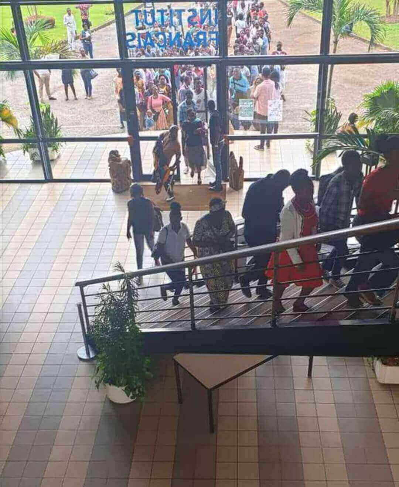
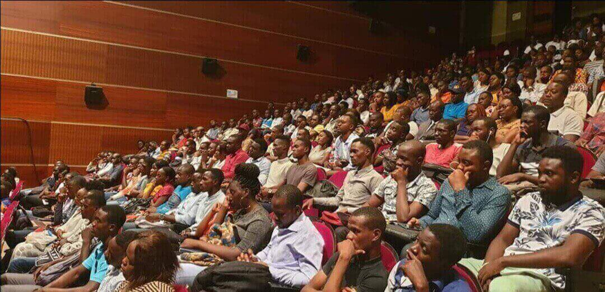
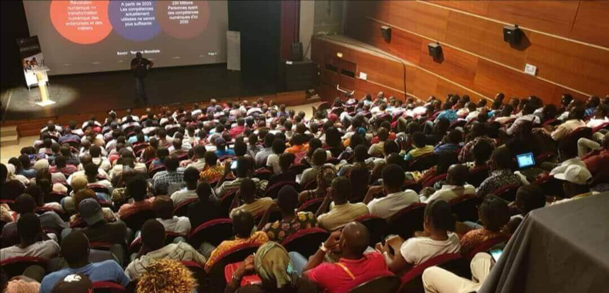
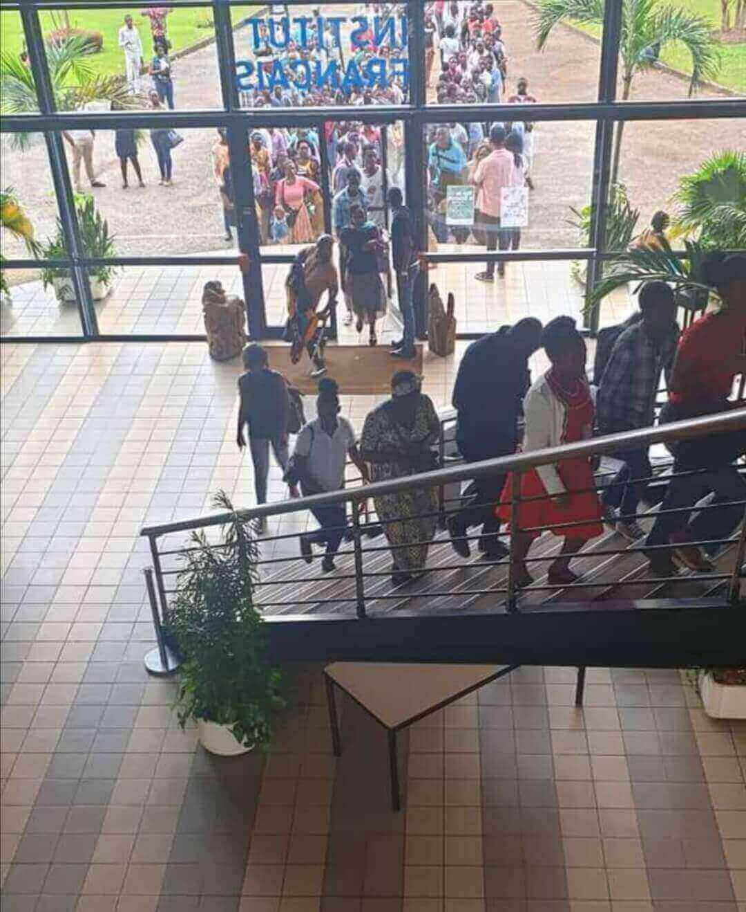
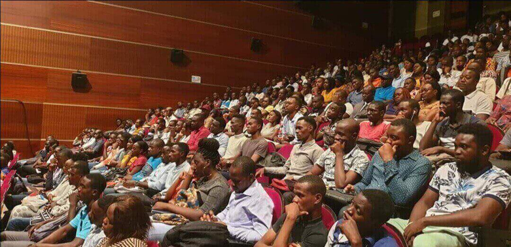
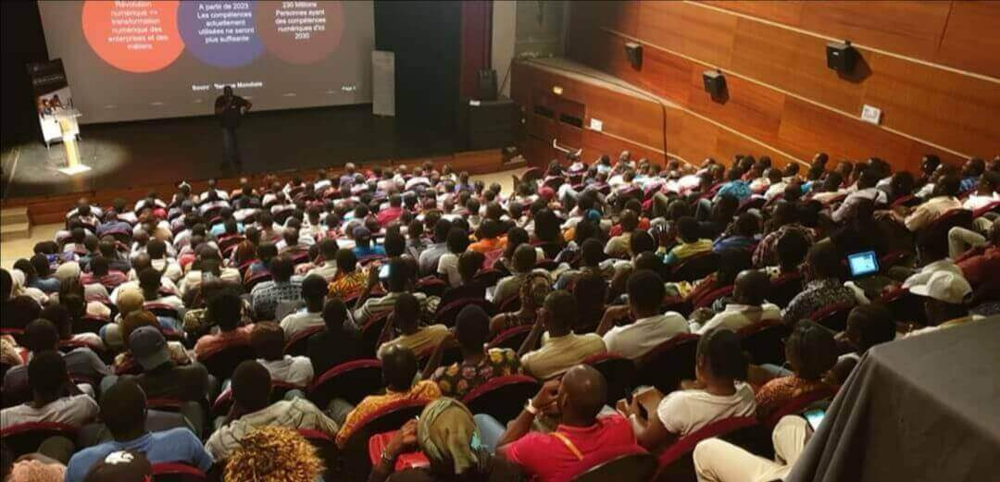

Youri-Mendoza IBABO-ISSOUDI
Développeur web et web mobile
Développeur web et web mobile
L'objectif de mon blog est de pouvoir non seulement permettre aux visiteurs d'entrer dans mon univers, vous informer mais aussi de découvrir l'Ecole241, nos partenaires, nos différentes activités depuis le debut des inscriptions en ligne et ceux jusqu'à la remise des certificats pour l'année 2019-2020.
Phase des pre-selections après les inscriptions en ligne

Dans cette partie, vous avez non seulement une vue d'ensemble à travers quelques images qui retraces les différentes évenements qui m'ont marqué durant la reunion d'information organisé par l'Ecole 241 au Centre Culture Français (CCF) et la phase des tests le 09/11/2019 mais aussi des mots d'encouragement du fondateur de l'Ecole 241 (l'image à gauche).
 





MES PREMIERES SEMAINES DES COURS A L'ECOLES 241

Mes premières semaines de cours ont été l'un des événements marquants après la phase de la prairie à l'Ecole 241. Soulignant que m'ont intégration au sein de cette école a été rendu facile grâce à l'accueil chareuleureuse et conviviale de la formidable équipe gérée par de M. Sylvère BOUSSAMBA (Le fondateur de l'Ecoel 241) et Mme Sylvie Touré T'chandy (La Directrice de cette prestigieuse ecole).
LA NOUVELLE ANNEE : l'anniversaire de Mme Ghislaine Laryssa BOUSSAMBA
La nouvelle année 2020 a été marqué par un événement extraordinaire : l"anniversaire de Mme Ghislaine Laryssa BOUSSAMBA. Ci-dessous vous les immages qui retraces parfaitement ce jours avec l'ensemble du comité de pliotage et les apprenants de la promo 2020.
LA NUIT DES IDEES AU MUSÉE NATIONAL DU GABON (2020) : « Être vivant »

Initié il y'a 5 ans par L'Institut français de Paris, la 2ème grande édition de la Nuit des idées a été également célèbré au Musée National du Gabon le 30 janvier 2020. A cela, notons que, comme la première édition en 2019, L'Ecole 241 était fortement répresenté avec notamment l'ensemble des responsables de l'Ecole 241 et les aprenants de la prémière et deuxième promotion.
LA SAINT VALENTIN CITOYENNE (LES RESEAUX SOCIAUX : AGIR POUR UNE UTILISATION RESPONSABLE)
Invité à cette événement, l'Ecole 241 a marqué sa presence avec notamment la presence des apprénants de la deuxième promotion 2020.